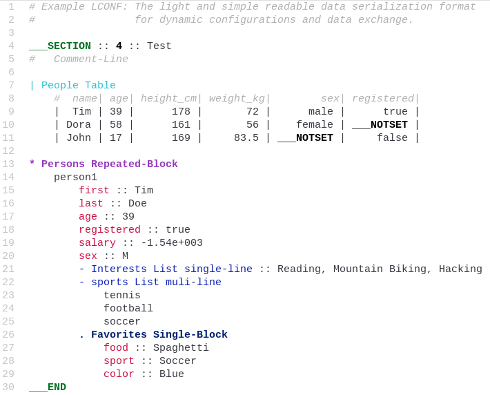

atom-language-lconf
atom-language-lconf adds LCONF language support in Atom-Editor.
Features
-
Syntax highlighting for LCONF The light and simple readable data serialization format for dynamic configurations and data exchange.
-
Illegal syntax highlighting helps avoiding common pitfalls.
-
Snippets for common LCONF keywords and constructs (see snippets/language-lconf.cson)
:- LCONF-Key-Value-Separators- LCONF-Start-TAGe- LCONF-End-TAGn- LCONF-NOTSETk- LCONF-Key :: Value Pair-- LCON-List-multi-line-s- LCON-List-single-line|- LCON-Table.- LCON-Single-Block*- LCON-Repeated-Block
Installation
Installation happens normally either through apm install atom-language-lconf or through the install section of
the settings tab within Atom.
Recommended Extras
-
Atom Light UI Theme package is the recommendet companion UI Theme.
-
The atom-theme-p-light-syntax package is a Syntax Theme package a derivative of Atom's One Light Syntax Theme with additional syntax highlighting for the LCONF language.
Recommended Atom Settings
- UI Theme: Atom Light
- fontFamily: "Liberation Mono"
- lineHeight: 1.3
LCONF Language Example File
